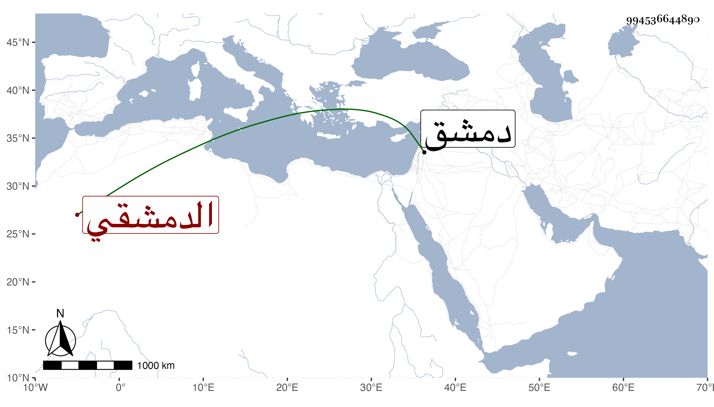

0902Sakhawi.DawLamic.ITO20230111-ara1.EIS1600.994536644890
Biography ID: 994536644890
385
محمد بن أبي بكر بن أحمد بن أبي الفتح بن إدريس بن سلامة أمين الدين أو شمس الدين بن المحدث العماد أو الكمال الدمشقي المذكور أبوه في الثامنة ويعرف بابن السراج ابن أخي محمد الماضي سمع عبد الرحيم بن أبي اليسر وزينب ابنة الخباز في آخرين ولقيه شيخنا بدمشق فقرأ عليه . ومات في رمضان أو شوال سنة ثلاث ، وهو في معجمه وانبائه وتبعه المقريزي في عقوده . وممن سمع منه قطعة جيدة من مسند الفريابي التقي أبو بكر القلقشندي .
